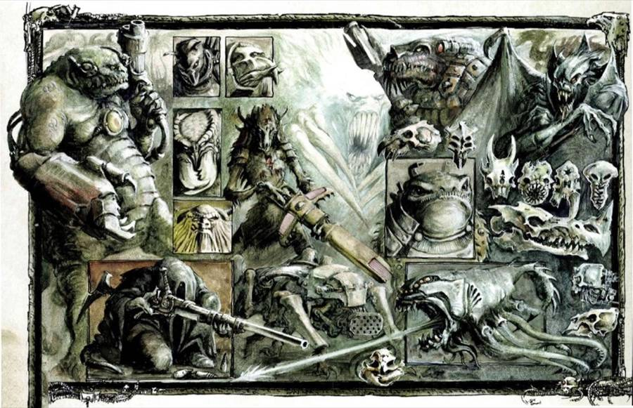

Xenos
| Xenos the alien | |
|---|---|
 Plate from an Ordo Xenos bestiary showing specimens of several alien species | |
| Meaning | Any intelligent non-human species, or a member of one |
| Origin | High Gothic, "stranger" or "foreigner" |
| Doctrine | Aliens are to be shunned, opposed and, where possible, destroyed |
| Enforced by | Ordo Xenos of the Inquisition; Deathwatch; Adeptus Ministorum |
| Major species | Aeldari; Orks; Necrons; Tyranids; T'au; Drukhari |
| Exceptions | Sanctioned xenos under Warrant of Trade or Inquisitorial licence |
| Related doctrine | "Suffer not the alien to live" |
Xenos (plural xenos; from High Gothic for "stranger") is the term used in the Imperium of Mankind for any intelligent species that is not human, and for any member of such a species. The word also names the body of Imperial doctrine that governs the treatment of aliens. That doctrine holds that mankind alone is destined to rule the galaxy under the Emperor of Mankind, that alien species are rivals and dangers to be shunned and, where possible, destroyed, and that alien technology, ideas and influence corrupt those who touch them. It is summarised in the Ecclesiarchal maxim "suffer not the alien to live".[1][2]
Imperial hostility to aliens is ancient. The Great Crusade (c. 798.M30–005.M31) waged wars of extermination against alien empires such as the Rangdan and the Orks of Ullanor, and destroyed the human Interex in 003.M31 in part because it lived in alliance with aliens. In the 41st millennium alien threats include the Aeldari, the Orks, the Necrons, the Tyranids and the T'au Empire, and the Ordo Xenos of the Inquisition and its chamber militant, the Deathwatch, exist to oppose them.[3][4]
The doctrine admits exceptions. Some alien species are tolerated as mercenaries, guides or trading partners under a Warrant of Trade or an Inquisitorial licence, and the study of aliens, xenology, is permitted to the Inquisition and to approved scholars. In the Era Indomitus, Roboute Guilliman has accepted the aid of the Aeldari and of the Ynnari, a choice that remains controversial among the clergy.[5]
Doctrine
[edit]Imperial Creed
[edit]The Imperial Cult teaches that the Emperor gave the stars to mankind and that alien species occupy worlds that rightly belong to humanity. The Liber Ecclesiasticus (M37) condemns tolerance of the alien as a sin, and Ecclesiarchal preaching describes xenos as soulless, treacherous or allied to the powers of the Warp. Hatred of the alien is one of the first lessons of the schola progenium and of the Imperial Infantryman's Uplifting Primer, which instructs soldiers that every alien is an enemy.[2][6]
Imperial law
[edit]Imperial law forbids unauthorised contact with aliens, trade in alien goods, the use of alien technology and the possession of alien texts. Penalties range from imprisonment to death, and whole worlds have been purged for collaboration with xenos. The Adeptus Mechanicus treats alien technology as anathema to the Omnissiah unless sanctioned by a Fabricator-General, though some magi, notably the Xenarites of Stygies VIII, study it in secret.[1][7]
The Great Crusade
[edit]The secular doctrine of the Imperial Truth did not regard aliens as spiritually unclean, but it held that humanity's survival required the removal of every rival species from the space the Imperium claimed. The crusade's Space Marine Legions were the principal instruments of this policy, and its greatest wars, such as the Rangdan Xenocides (c. 839–890.M30) and the Ullanor Crusade (c. 999.M30–000.M31), were wars against aliens. The few species spared were those too weak to matter or too useful to destroy. The Interex, a human realm encountered in 002.M31, objected to this policy, and its destruction by the Luna Wolves in 003.M31 was one of the turning points that led to the Horus Heresy.[8][3]
Institutions
[edit]The Inquisition's Ordo Xenos holds primary responsibility for alien threats. Its Inquisitors investigate alien activity, suppress xenos cults and collaborators, and confiscate alien artefacts. Since the middle of the 32nd millennium, after the War of the Beast (544–546.M32), it has commanded the Deathwatch, formed of warriors seconded from the Space Marine Chapters to hunt aliens. The Adeptus Astartes, the Astra Militarum and the Imperial Navy fight the great alien wars, and the Ecclesiarchy preaches the doctrine.[4][3]
Classification
[edit]The Ordo Xenos keeps registers of alien species, assessing each by its danger to mankind. Imperial scholars distinguish broadly between the great xenos powers, which can threaten whole sectors, and minor species, which may be enemies, subjects or occasional allies.[4]
| Species | Imperial assessment | First major Imperial war |
|---|---|---|
| Aeldari | Ancient, psychic, treacherous; sometimes allied | Great Crusade (M30) |
| Drukhari | Raiders and slavers from the Webway | Great Crusade (M30) |
| Orks | Most numerous; constant threat | Ullanor Crusade (c. 999.M30); War of the Beast (544–546.M32) |
| Necrons | Ancient machine race; awakening | Time of Ending (late M41) |
| Tyranids | Extragalactic devourers | Hive Fleet Behemoth (745.M41) |
| Genestealer Cults | Hidden infection of human worlds | Recorded from M41 |
| T'au Empire | Young, expansionist, seductive | Damocles Gulf Crusade (742–745.M41) |
| Leagues of Votann | Classification disputed: abhuman or xenos | Era Indomitus (M42) |
Minor species recorded in Imperial archives include the Kroot and Vespid, which serve the T'au; the Hrud; the Jokaero, whose gift for technology has led some to be kept by Inquisitors; the Stryxis traders of the frontier; and the Megarachnids encountered by the Luna Wolves in 003.M31.[4][9]
Sanctioned xenos
[edit]Despite the doctrine, the Imperium has always made use of aliens when it suited it. Rogue Traders may, under the terms of their warrants, trade and treat with xenos beyond the Imperium's borders. Inquisitors of the Ordo Xenos, particularly those of the "radical" persuasion, employ alien warriors, guides and technologies against greater alien threats. Some Imperial commanders have fought alongside Aeldari forces against common enemies. All such arrangements are viewed with suspicion and may be revoked at any time.[4][9]
The most significant exception in Imperial history is the return of Roboute Guilliman, which was made possible in 999.M41 by the Aeldari of the Ynnari and the archmagos Belisarius Cawl. The Lord Commander has since accepted Aeldari aid on several occasions, a policy recorded by the Office of the Lord Commander and criticised in sections of the Ecclesiarchy.[5]
Timeline
[edit]| Date | Event |
|---|---|
| c. 839–890.M30 | Rangdan Xenocides |
| c. 999.M30–000.M31 | Ullanor Crusade against the Orks |
| 003.M31 | Destruction of the Interex |
| 544–546.M32 | War of the Beast |
| Mid-M32 | Deathwatch founded under the Ordo Xenos |
| 742–745.M41 | Damocles Gulf Crusade; first war with the T'au |
| 745.M41 | First Tyrannic War |
| 999.M41 | Guilliman restored with Aeldari aid |
See also
[edit]References
[edit]- ^ a b Codex Imperialis (rev. 980.M41). Adeptus Terra.
- ^ a b Liber Ecclesiasticus (M37). Adeptus Ministorum.
- ^ a b c Lexicanum Martialis. Officio Militaris.
- ^ a b c d e Eisenhorn, Gregor (c. 300.M41). Memoirs of an Inquisitor. Ordo Xenos (sealed).
- ^ a b Records of the Indomitus Crusade (ongoing). Office of the Lord Commander.
- ^ Imperial Infantryman's Uplifting Primer (rev. 990.M41). Departmento Munitorum.
- ^ Cawl, Belisarius (c. 999.M41). Notes on the Ultima Founding. Mars.
- ^ Chronicles of the Heresy (sealed). Logos Historica Verita, Terra.
- ^ a b Charter Notes of the Koronus Expanse (M41). Rogue Trader houses of Port Wander.